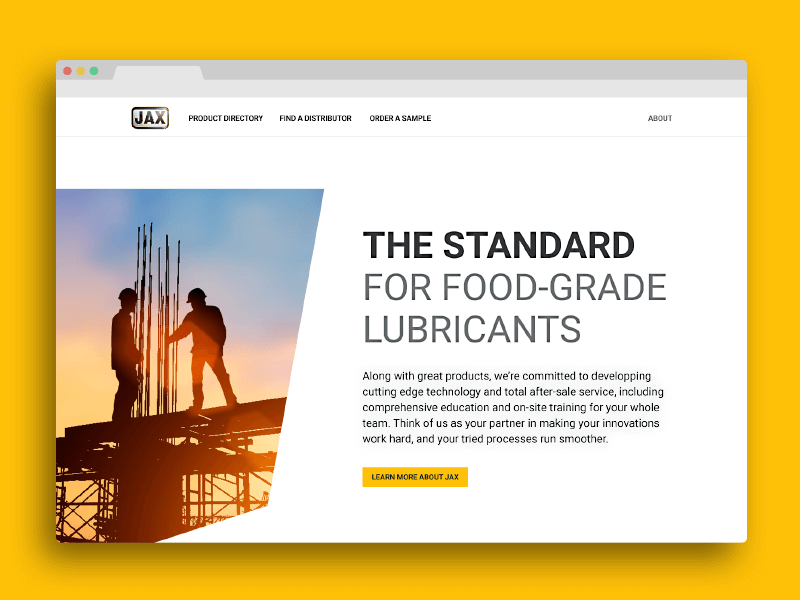
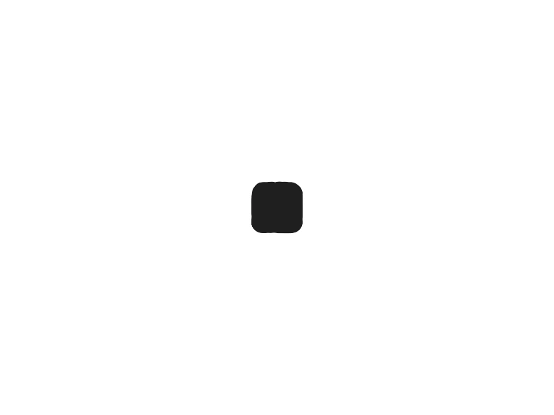
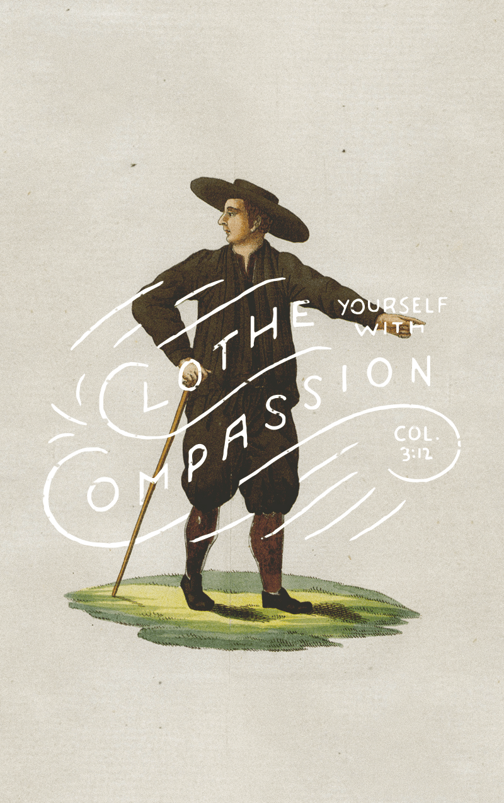

The independent design studio of
Isaac Weisman
Building and sustaining brands that demand attention.
A multidisciplinary creative studio focused on building brands that last, we've worked with organizations of all sizes. From household names to the church down the street, we bring your vision to life through a tried and true creative process.


